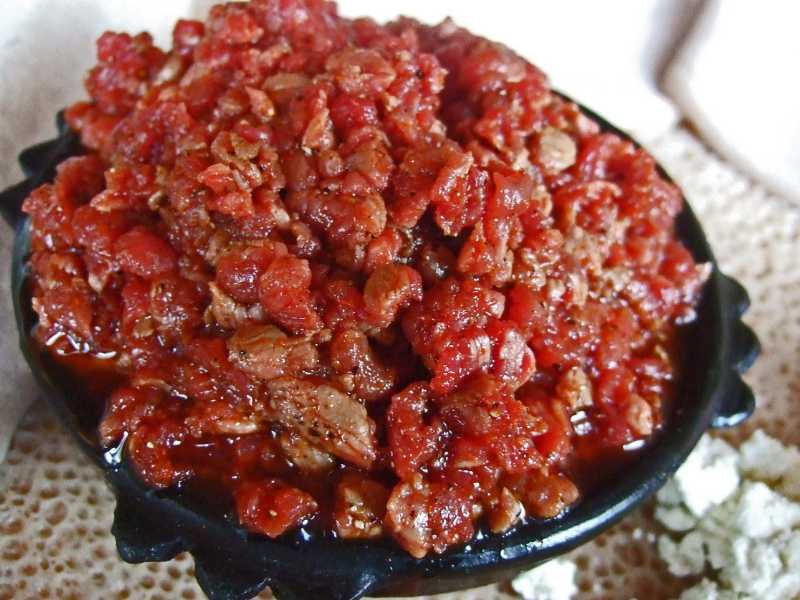

Beef Kitfo with Awase

Description
Kitfo is the ultimate celebration dish in Ethiopia. The spiced raw beef
was an important part of my wedding feast, but it is also served after a
long vegetable fast. It can be refined, as it is here, but at its
simplest, kitfo is simply chunks of raw beef dipped in the spicy dip
called awase.
Ingredients
- 2 tablespoons Spiced Butter, plus more as needed, recipe follows
- 1 tablespoon berbere
- 1 pound beef tenderloin, fat trimmed, finely diced
- 2 tablespoons olive oil
Steps
-
For the awase: Heat the oil in a large skillet over medium heat. Stir in
the berbere, cayenne, horseradish and lemon juice and season with salt.
Pour the awase into a small bowl without wiping out the skillet. Set
aside.
-
For the kitfo: Heat the Spiced Butter in the same skillet over medium
heat. Add the shallots, garlic and jalapenos and stir to combine. Add
the berbere and more Spiced Butter if the pan looks dry. Add the
vinegar, season with salt and simmer until some of the liquid has
evaporated, 2 to 3 minutes. Stir in the mustard and cook 1 minute more,
then transfer the kitfo base to a small bowl without wiping out the
skillet. Set aside and keep warm.
-
Add the whole-wheat bread to the skillet and toast so the bread absorbs
the kitfo flavors, about 2 minutes per side.
-
Meanwhile, sprinkle the beef with salt and pepper and toss to combine.
Stir in the kitfo base until combined.
-
Put out the bowl of kitfo, the awase and a stack of toasts or injera if
desired. Rip off pieces of toast, pile with kitfo and dip in the awase.
Home